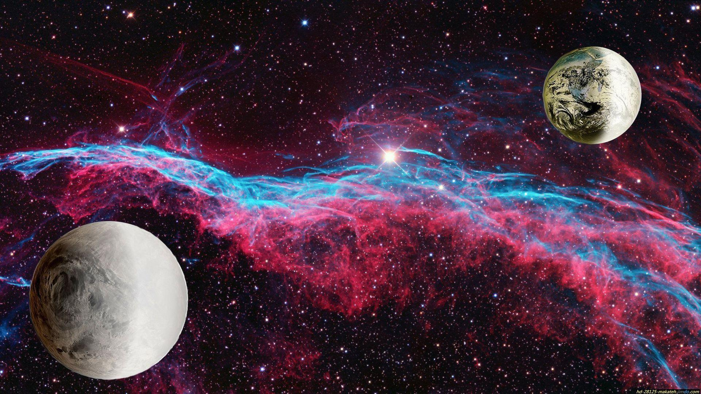

Para encontrarlos
Para poder encontrar nuevos exo-planetas hoy en dia se usan 3 metodos.

Método de Tránsito
Detecta exoplanetas observando la disminución periódica de la luz de una estrella cuando un planeta pasa frente a ella (tránsito).

Método de Velocidad Radial
Observa variaciones en la velocidad de una estrella causadas por la influencia gravitacional de un planeta en órbita.

Método de Microlente Gravitatoria
El método de Microlente Gravitatoria detecta planetas al observar cambios en la luz de una estrella causados por un planeta que actúa como una lente gravitacional debido a la teoría de Einstein.